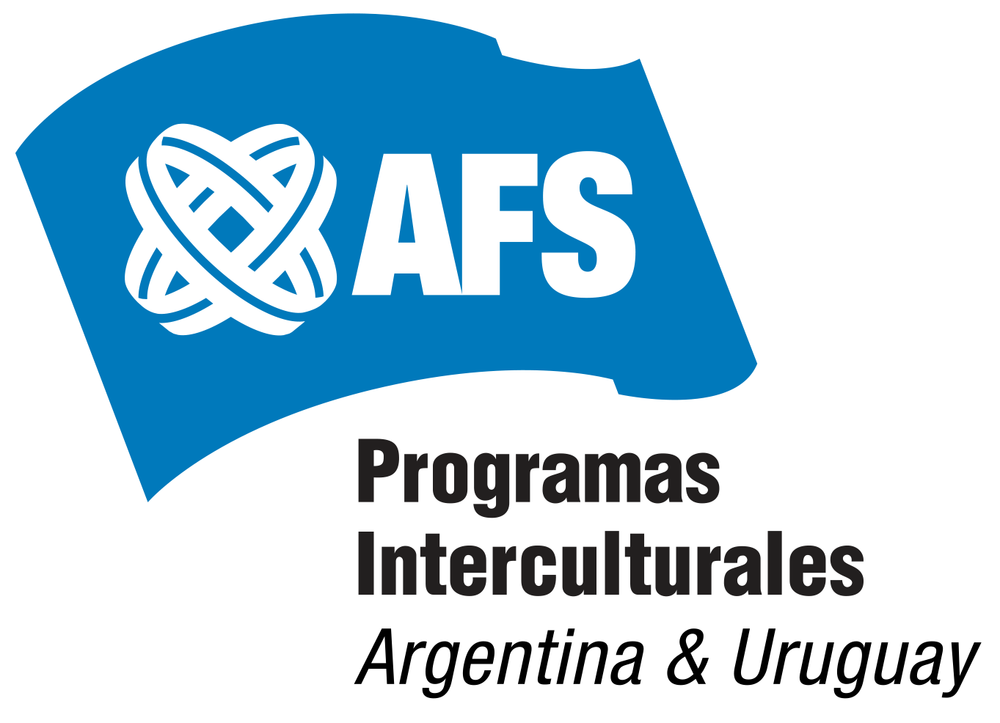
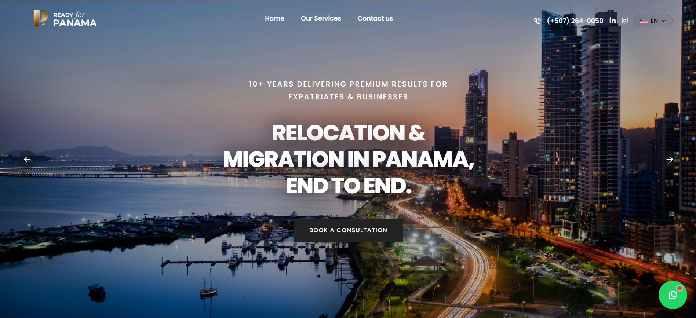
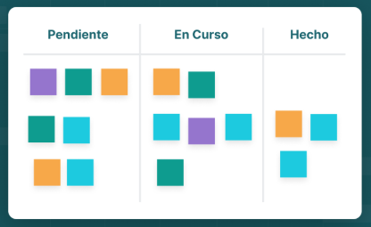

Soy un estudiante de la Licenciatura en Negocios Digitales. Aca muestro de una forma más orgánica mis proyectos, tareas y aprendizajes :)
Me interesa entender cómo se construyen y escalan negocios en entornos digitales — desde la estrategia hasta la ejecución.
A lo largo de la carrera fui combinando proyectos de estrategia digital, análisis de datos y diseño de producto. Este espacio reúne ese recorrido: trabajos de la facultad, proyectos personales/laborales y colaboraciones, todo agrupado en un mismo lugar para que se pueda ver cómo pienso y cómo trabajo.
Siempre aprendiendo y buscando oportunidades donde pueda aportar en negocio, producto o estrategia digital.
Cuatro frentes en los que vengo formándome y aplicando en proyectos reales.

01 — EstrategiaAnálisis de mercado e implementación de campañas de Meta y Google ads para AFS, la agencia de programas de intercambio internacionales.

02 — ProductoDesarrollé diferentes sitios web aplicando conceptos de HTML, CSS, Javascript y UX/UI para clientes como: MMA Globe, Ready For Panamá, Mainspring, etc.

03 — DatosEn la facultad aprendí conceptos sobre metodologías agiles como: Scrum, Inception, Kanban e Impact mapping.